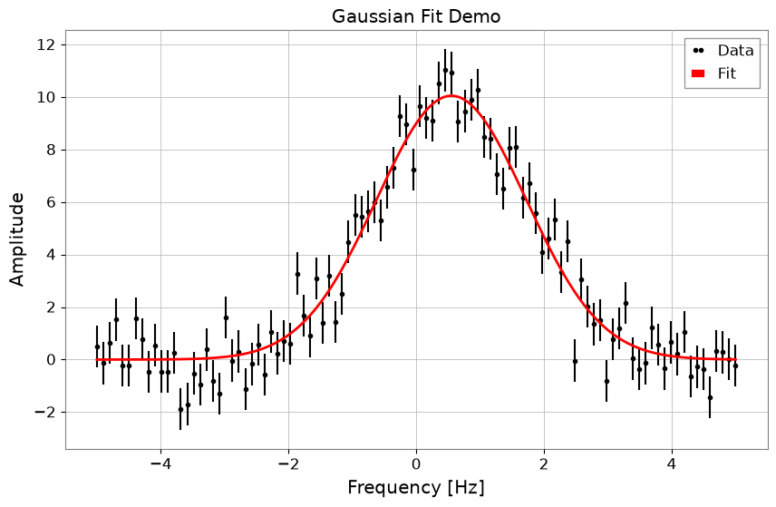

Note
このページは Jupyter Notebook から生成されました。 ノートブックをダウンロード (.ipynb)
[ ]:
# Install gwexpy with pinned versions of core dependencies for reproducibility on Colab
%pip install -q "gwexpy[all]" "gwpy<5.0.0" "numpy<2.0.0" "scipy<1.13.0" "astropy<7.0.0"
フィッティング: スペクトル線解析

このノートブックでは、gwexpy.fitting モジュールを使用して、TimeSeries や FrequencySeries データに対して簡単にフィッティングを行う方法を紹介します。 バックエンドには iminuit を使用しており、誤差を考慮した最小二乗法フィッティングが可能です。
[1]:
import warnings
warnings.filterwarnings("ignore", category=UserWarning)
warnings.filterwarnings("ignore", category=DeprecationWarning)
import matplotlib.pyplot as plt
import numpy as np
from gwexpy.frequencyseries import FrequencySeries
from gwexpy.plot import Plot
from gwexpy.timeseries import TimeSeries
plt.rcParams["figure.figsize"] = (10, 6)
1. データの準備
ここでは、ガウス関数にノイズを加えたダミーデータを作成します。
[2]:
# Function Define (GaussianFunction)
def gaussian(x, a, mu, sigma):
return a * np.exp(-((x - mu) ** 2) / (2 * sigma**2))
# Data Generate
np.random.seed(42)
x = np.linspace(-5, 5, 100)
true_params = {"a": 10, "mu": 0.5, "sigma": 1.2}
y_true = gaussian(x, **true_params)
y_noise = y_true + np.random.normal(0, 1.0, size=len(x))
# TimeSeries Create
ts = TimeSeries(y_noise, dt=0.1, name="Noisy Gaussian", unit="V")
ts.plot(title="Noisy Data for Gaussian Fit");

2. フィッティングの実行
ts.fit() メソッドを使用してフィッティングを行います。 引数にはモデル関数と、パラメータの初期値 p0 を指定します。
[3]:
#
# p0
result = ts.fit(gaussian, sigma=0.8, p0={"a": 5, "mu": 5, "sigma": 1})
# Result Display
display(result)
| Migrad | |
|---|---|
| FCN = 125.2 (χ²/ndof = 1.3) | Nfcn = 87 |
| EDM = 4.03e-06 (Goal: 0.0002) | |
| Valid Minimum | Below EDM threshold (goal x 10) |
| No parameters at limit | Below call limit |
| Hesse ok | Covariance accurate |
| Name | Value | Hesse Error | Minos Error- | Minos Error+ | Limit- | Limit+ | Fixed | |
|---|---|---|---|---|---|---|---|---|
| 0 | a | 10.05 | 0.21 | |||||
| 1 | mu | 5.495 | 0.029 | |||||
| 2 | sigma | 1.159 | 0.028 |
| a | mu | sigma | |
|---|---|---|---|
| a | 0.0461 | -0 (-0.005) | -3.4e-3 (-0.569) |
| mu | -0 (-0.005) | 0.000828 | 0 (0.008) |
| sigma | -3.4e-3 (-0.569) | 0 (0.008) | 0.000794 |
3. 結果の取得とプロット
FitResult オブジェクトから、ベストフィットパラメータや誤差、Chi2 値などを取得できます。 また、.plot() メソッドで簡単に結果を可視化できます。
[4]:
print("Best Fit Parameters:", result.params)
print("Errors:", result.errors)
print("Chi2:", result.chi2)
print("NDOF:", result.ndof)
# Plot
fig, ax = plt.subplots(figsize=(10, 6))
result.plot(ax=ax, color="red", linewidth=2)
ax.set_title("Gaussian Fit Demo")
# auto-gps 、xlabel GWpy （epoch Label ）
ax.set_ylabel("Amplitude")
plt.show()
Best Fit Parameters: {'a': 10.052918089640286, 'mu': 5.4945648175959265, 'sigma': 1.1593703774715336}
Errors: {'a': 0.21465022616772478, 'mu': 0.028783389431543863, 'sigma': 0.028181477272667253}
Chi2: 125.15392927134539
NDOF: 97

3. 文字列によるモデル指定
モデル関数を定義する代わりに、定義済みのモデル名を文字列で指定することもできます。 現在サポートされているモデル: 'gaus', 'exp', 'pol0', 'pol1', … 'pol9', 'landau' など。
以下は 'gaus' を指定してフィッティングを行う例です。
[5]:
# 'gaus'
# : Define (Gaussian A, mu, sigma)
result_str = ts.fit(
"gaus", p0={"A": 10, "mu": 5, "sigma": 1.0}, x_range=(2, 8), sigma=0.8
)
# Result Display
display(result_str)
result_str.plot();
| Migrad | |
|---|---|
| FCN = 83.02 (χ²/ndof = 1.5) | Nfcn = 76 |
| EDM = 1.49e-09 (Goal: 0.0002) | |
| Valid Minimum | Below EDM threshold (goal x 10) |
| No parameters at limit | Below call limit |
| Hesse ok | Covariance accurate |
| Name | Value | Hesse Error | Minos Error- | Minos Error+ | Limit- | Limit+ | Fixed | |
|---|---|---|---|---|---|---|---|---|
| 0 | A | 10.05 | 0.22 | |||||
| 1 | mu | 5.492 | 0.029 | |||||
| 2 | sigma | 1.159 | 0.029 |
| A | mu | sigma | |
|---|---|---|---|
| A | 0.047 | -0.1e-3 (-0.012) | -3.7e-3 (-0.580) |
| mu | -0.1e-3 (-0.012) | 0.000841 | 0 (0.027) |
| sigma | -3.7e-3 (-0.580) | 0 (0.027) | 0.000864 |

4. 複素数フィッティング (伝達関数)
伝達関数などの複素数データに対してもフィッティングを行えます。 コスト関数として \(\chi^2 = \sum (Re_{diff})^2 + \sum (Im_{diff})^2\) を最小化し、実部と虚部を同時にフィットします。 結果のプロットは自動的にボード線図（振幅・位相）になります。
[6]:
# 1. Complex number Define ( )
def pole_model(f, A, f0, Q):
# H(f) = A / (1 + i * Q * (f/f0 - f0/f))
# Low-pass filter like but simplified. Let's use standard mechanical transfer function:
# H(f) = A / [ (f0^2 - f^2) + i * (f0 * f / Q) ]
omega = 2 * np.pi * f
omega0 = 2 * np.pi * f0
return A / ((omega0**2 - omega**2) + 1j * (omega0 * omega / Q))
# 2. DataGenerate
f = np.linspace(10, 1000, 1000)
p_true = {"A": 1e7, "f0": 300, "Q": 10}
data_clean = pole_model(f, **p_true)
# Noise ( )
np.random.seed(0)
noise_re = np.random.normal(0, 5, len(f))
noise_im = np.random.normal(0, 5, len(f))
data_noisy = data_clean + 0.2 * noise_re + 0.2j * noise_im
# FrequencySeries Create
fs = FrequencySeries(data_noisy, frequencies=f, name="Transfer Function")
plot = Plot(fs.abs(), fs.real, fs.imag, xscale="log", yscale="symlog", alpha=0.8)
plt.legend(["|H(f)|", "Re(H(f))", "Im(H(f))"])
plt.title("Noisy Transfer Function Data")
plt.tight_layout()
plt.show()

[7]:
# 3.
print("Fit Start...")
#
result_complex = fs.fit(pole_model, sigma=1.0, p0={"A": 0.8e7, "f0": 320, "Q": 8})
# ResultDisplay
display(result_complex)
# 4. Plot ( )
# Amplitude Phase Plot
result_complex.bode_plot()
plt.gcf().get_axes()[0].set_ylim(1e-1, 1e2)
plt.tight_layout()
plt.show()
Fit Start...
| Migrad | |
|---|---|
| FCN = 1907 (χ²/ndof = 1.0) | Nfcn = 102 |
| EDM = 1.21e-09 (Goal: 0.0002) | |
| Valid Minimum | Below EDM threshold (goal x 10) |
| No parameters at limit | Below call limit |
| Hesse ok | Covariance accurate |
| Name | Value | Hesse Error | Minos Error- | Minos Error+ | Limit- | Limit+ | Fixed | |
|---|---|---|---|---|---|---|---|---|
| 0 | A | 10.09e6 | 0.07e6 | |||||
| 1 | f0 | 300.24 | 0.11 | |||||
| 2 | Q | 9.99 | 0.10 |
| A | f0 | Q | |
|---|---|---|---|
| A | 5.4e+09 | 795.222 (0.099) | -5.296459e3 (-0.707) |
| f0 | 795.222 (0.099) | 0.0118 | -0.000 (-0.035) |
| Q | -5.296459e3 (-0.707) | -0.000 (-0.035) | 0.0104 |

5. MCMC 解析 (emcee)
iminuit で得られた最尤推定値を初期値として、emcee を用いた MCMC (Markov Chain Monte Carlo) 解析を行うことができます。
Note: この機能を使用するには
emceeとcornerがインストールされている必要があります。
[8]:
# MCMC Run
# n_walkers: walker , n_steps: , burn_in:
try:
sampler = result_complex.run_mcmc(n_walkers=32, n_steps=1000, burn_in=200)
# Plot Create ( minutes Visualization)
# （ Estimated ） Display
result_complex.plot_corner()
except ImportError as e:
print(e)
except Exception as e:
print(f"MCMC Error: {e}")
Please install 'emcee' and 'corner' to use MCMC features.
新しい共通モデルの使用例
gwexpy.fitting.models に追加された power_law と damped_oscillation の使用例です。
[9]:
from gwexpy.fitting.models import damped_oscillation, power_law
# Power law
x = np.logspace(0, 2, 100)
y = power_law(x, A=10, alpha=-1.5) * (1 + 0.1 * np.random.normal(size=len(x)))
fs = FrequencySeries(y, frequencies=x)
res_pl = fs.fit("power_law", p0={"A": 5, "alpha": -1}, sigma=y * 0.1)
print("Power law alpha:", res_pl.params["alpha"])
display(res_pl)
res_pl.plot()
plt.xscale("log")
plt.yscale("log")
plt.show()
plt.close()
# Damped oscillation
t = np.linspace(0, 1, 1000)
y_osc = damped_oscillation(t, A=1, tau=0.3, f=10) + 0.05 * np.random.normal(size=len(t))
ts_osc = TimeSeries(y_osc, times=t)
res_osc = ts_osc.fit(
"damped_oscillation", p0={"A": 0.5, "tau": 0.5, "f": 12}, sigma=0.05
)
print("Damped oscillation frequency:", res_osc.params["f"])
display(res_osc)
res_osc.plot();
Power law alpha: -1.4897338938575226
| Migrad | |
|---|---|
| FCN = 111.6 (χ²/ndof = 1.1) | Nfcn = 88 |
| EDM = 4.57e-06 (Goal: 0.0002) | |
| Valid Minimum | Below EDM threshold (goal x 10) |
| No parameters at limit | Below call limit |
| Hesse ok | Covariance accurate |
| Name | Value | Hesse Error | Minos Error- | Minos Error+ | Limit- | Limit+ | Fixed | |
|---|---|---|---|---|---|---|---|---|
| 0 | A | 9.62 | 0.19 | |||||
| 1 | alpha | -1.490 | 0.007 |
| A | alpha | |
|---|---|---|
| A | 0.036 | -1.20e-3 (-0.860) |
| alpha | -1.20e-3 (-0.860) | 5.42e-05 |

Damped oscillation frequency: 9.989812091376667
| Migrad | |
|---|---|
| FCN = 909.6 (χ²/ndof = 0.9) | Nfcn = 201 |
| EDM = 1.71e-06 (Goal: 0.0002) | |
| Valid Minimum | Below EDM threshold (goal x 10) |
| No parameters at limit | Below call limit |
| Hesse ok | Covariance accurate |
| Name | Value | Hesse Error | Minos Error- | Minos Error+ | Limit- | Limit+ | Fixed | |
|---|---|---|---|---|---|---|---|---|
| 0 | A | 0.997 | 0.008 | |||||
| 1 | tau | 0.303 | 0.004 | |||||
| 2 | f | 9.990 | 0.006 | |||||
| 3 | phi | 0.020 | 0.008 |
| A | tau | f | phi | |
|---|---|---|---|---|
| A | 6.87e-05 | -0.021e-3 (-0.718) | 0 (0.078) | -0.01e-3 (-0.108) |
| tau | -0.021e-3 (-0.718) | 1.3e-05 | -0.001e-3 (-0.057) | 0.002e-3 (0.078) |
| f | 0 (0.078) | -0.001e-3 (-0.057) | 3.92e-05 | -0.04e-3 (-0.713) |
| phi | -0.01e-3 (-0.108) | 0.002e-3 (0.078) | -0.04e-3 (-0.713) | 6.77e-05 |

7. スペクトル線フィッティング：ローレンツ関数と Voigt プロファイル
モデル |
使いどき |
|---|---|
Gaussian |
ドップラー・圧力広がり；対称なノイズピーク |
Lorentzian |
単一損失機構による共振（Q 値で幅が決まる） |
Voigt |
ガウス（計器分解能）＋ローレンツ（減衰）の複合広がり |
いずれも gwexpy.fitting.models に実装済みで、文字列名での指定が可能です。
7a. ローレンツ関数（HWHM パラメータ化）
A: ピーク振幅x0: 中心周波数gamma: 半値半幅 (HWHM)
[ ]:
from gwexpy.fitting.models import lorentzian, voigt
# ── ローレンツ共振ピークを含む合成 ASD データ ──────────────────
np.random.seed(0)
freqs = np.linspace(90, 130, 400) # Hz（110 Hz モード付近）
TRUE_A, TRUE_X0, TRUE_GAMMA = 50.0, 110.0, 0.8
y_lorenz = lorentzian(freqs, TRUE_A, TRUE_X0, TRUE_GAMMA)
noise = np.random.normal(0, 0.5, len(freqs))
y_data = y_lorenz + noise + 1.0 # +1 フラット背景
fs_lorenz = FrequencySeries(y_data, frequencies=freqs,
name='ASD with Lorentzian peak', unit='1/rtHz')
# ── フィット ─────────────────────────────────────────────────────
res_lorenz = fs_lorenz.fit(
'lorentzian',
p0={'A': 30.0, 'x0': 112.0, 'gamma': 1.5},
sigma=0.5,
)
print(f"真値 A={TRUE_A}, x0={TRUE_X0}, gamma={TRUE_GAMMA}")
print(f"推定 A={res_lorenz.params['A']:.2f} ± {res_lorenz.errors['A']:.2f}")
print(f" x0={res_lorenz.params['x0']:.3f} ± {res_lorenz.errors['x0']:.3f}")
print(f" gamma={res_lorenz.params['gamma']:.3f} ± {res_lorenz.errors['gamma']:.3f}")
fig, ax = plt.subplots(figsize=(10, 5))
res_lorenz.plot(ax=ax, label='ローレンツフィット')
ax.set_xlabel('周波数 [Hz]')
ax.set_ylabel('ASD [1/√Hz]')
ax.set_title('ローレンツ スペクトル線フィット')
ax.legend()
plt.tight_layout()
plt.show()
7b. ローレンツ Q 値パラメータ化
共振器では線幅を品質係数 \(Q = x_0 / (2\gamma)\) で表すと直感的です：
'lorentzian_q' を使うと (A, x0, Q) を直接フィットできます。
[ ]:
TRUE_Q = TRUE_X0 / (2 * TRUE_GAMMA) # ~68.75
res_q = fs_lorenz.fit(
'lorentzian_q',
p0={'A': 30.0, 'x0': 112.0, 'Q': 50.0},
sigma=0.5,
)
print(f"真値 Q = {TRUE_Q:.2f}")
print(f"推定 Q = {res_q.params['Q']:.2f} ± {res_q.errors['Q']:.2f}")
print(f" x0 = {res_q.params['x0']:.3f} ± {res_q.errors['x0']:.3f} Hz")
fig, ax = plt.subplots(figsize=(10, 5))
res_q.plot(ax=ax, label=f"Q = {res_q.params['Q']:.1f}")
ax.set_xlabel('周波数 [Hz]')
ax.set_ylabel('ASD [1/√Hz]')
ax.set_title('ローレンツ Q 値フィット')
ax.legend()
plt.tight_layout()
plt.show()
7c. Voigt プロファイル
[ ]:
# ── 複合広がりを持つ合成データ ──────────────────────────────────
TRUE_SIGMA, TRUE_GAMMA_V = 0.5, 0.4
y_voigt = voigt(freqs, A=40.0, x0=110.0, sigma=TRUE_SIGMA, gamma=TRUE_GAMMA_V)
y_data_v = y_voigt + np.random.normal(0, 0.4, len(freqs)) + 0.5
fs_voigt = FrequencySeries(y_data_v, frequencies=freqs,
name='ASD with Voigt peak', unit='1/rtHz')
# ローレンツ（誤ったモデル）で比較
res_l = fs_voigt.fit('lorentzian', p0={'A': 30.0, 'x0': 111.0, 'gamma': 0.8},
sigma=0.4)
# Voigt（正しいモデル）でフィット
res_v = fs_voigt.fit('voigt',
p0={'A': 30.0, 'x0': 111.0, 'sigma': 0.6, 'gamma': 0.5},
sigma=0.4)
print(f"ローレンツ chi2/ndof = {res_l.chi2:.1f}/{res_l.ndof}")
print(f"Voigt chi2/ndof = {res_v.chi2:.1f}/{res_v.ndof}")
print(f"推定 sigma={res_v.params['sigma']:.3f}（真値 {TRUE_SIGMA}）,"
f" gamma={res_v.params['gamma']:.3f}（真値 {TRUE_GAMMA_V}）")
fig, axes = plt.subplots(1, 2, figsize=(14, 5))
res_l.plot(ax=axes[0], label='ローレンツフィット')
axes[0].set_title(f"ローレンツ χ²/ndof = {res_l.chi2:.0f}/{res_l.ndof}")
axes[0].set_xlabel('周波数 [Hz]')
axes[0].legend()
res_v.plot(ax=axes[1], label='Voigt フィット')
axes[1].set_title(f"Voigt χ²/ndof = {res_v.chi2:.0f}/{res_v.ndof}")
axes[1].set_xlabel('周波数 [Hz]')
axes[1].legend()
plt.suptitle('モデル比較: ローレンツ vs Voigt', fontsize=13)
plt.tight_layout()
plt.show()